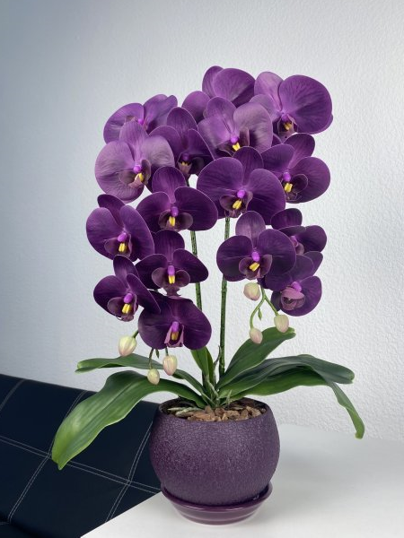
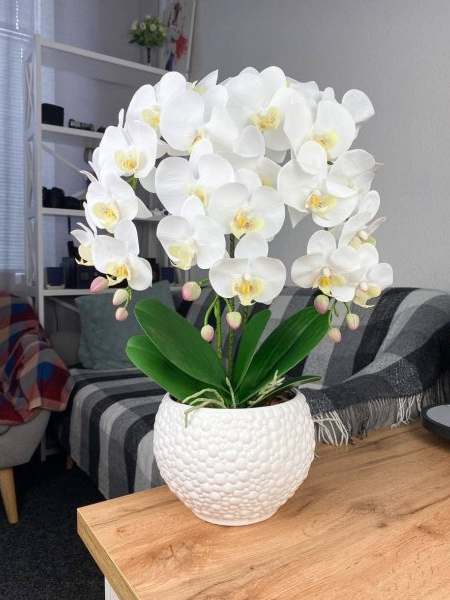
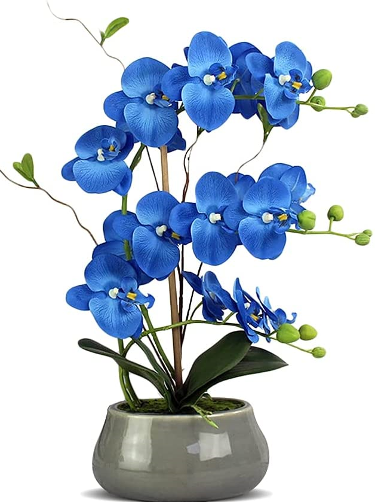
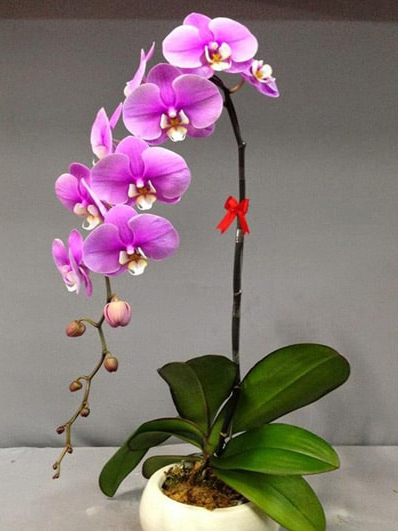
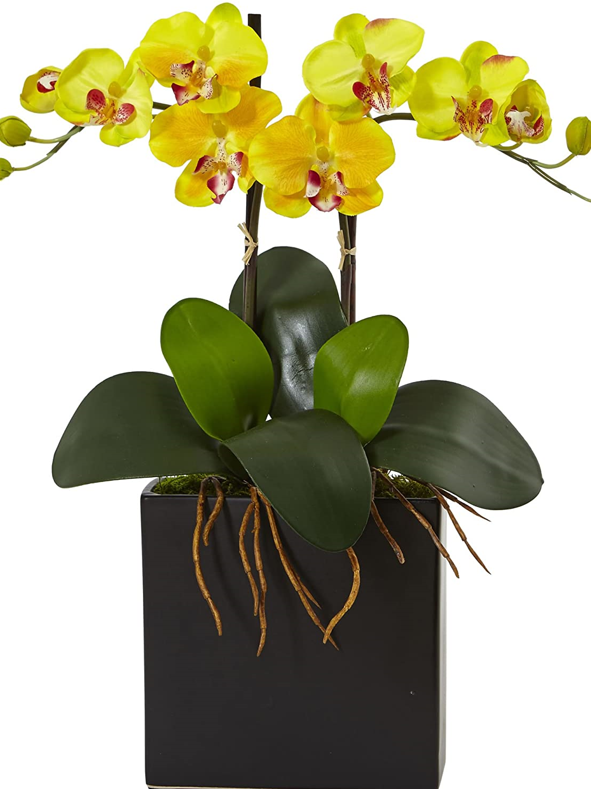
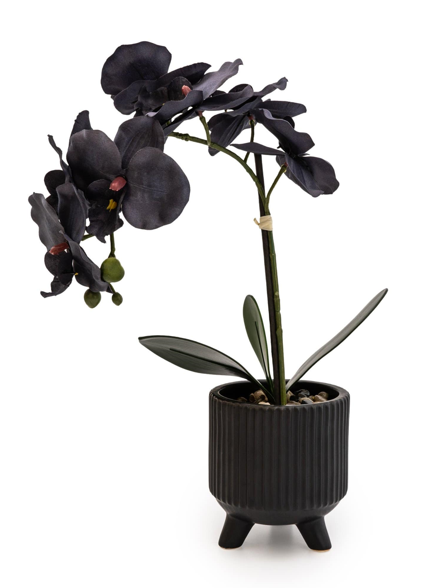

Dark Purple Orchid
Purple orchids symbolize respect, royalty, and admiration.
The most common types of purple orchids are vanda orchids, denrobium orchids,
phalaenopsis orchids, spathoglottis orchids, and cattleya orchids.
These exquisite orchid blooms make the perfect gifts to someone you have high regard of.

White Orchid
As a symbol of purity, these fresh orchids also symbolize faith, humility, safety, elegance,
innocence, and beauty. Choose to include white orchids in your wedding floral for purity and elegance,
to display in a specific place of worship for faith and spirituality, or to simply enjoy their beauty in your home

Blue Orchid
Blue orchids, mostly found in supermarkets and grocery stores, are eye-catchers.
These Phalaenopsis orchids display a deep, rich blue that is so uncommon in nature.
Even people who are not plant-lovers slow their pace when walking by the mystical,
jaw-dropping display, and it's almost as if you can read their minds.

Pink Orchid
Pink orchids can be found in almost all genera of orchids.
Among all, Phalaenopsis, Dendrobium, Cymbidium and Vanda are the most popular.
This popularity is probably because these pink orchids have substantial substance, and therefore are long lasting.

Yellow Orchid
The color yellow is associated with activity, optimism, and happiness,
so it only makes sense that yellow orchids symbolize new beginnings, friendship, and joy
Initially, yellow orchids flower grew only in tropical latitudes, in areas with high humidity.
Now they are found on all continents except Antarctica

Black Orchid
Black orchid is a type of orchid flower which is common in Asia and America.
The common black orchid meanings are strength, virility, sexual desires, and success.
On the other hand, bad luck, death, and black magic have their importance in the black orchid meaning.
{kind=link}
{kind=link}
{kind=link}
{kind=link}
{kind=link}
{kind=link}